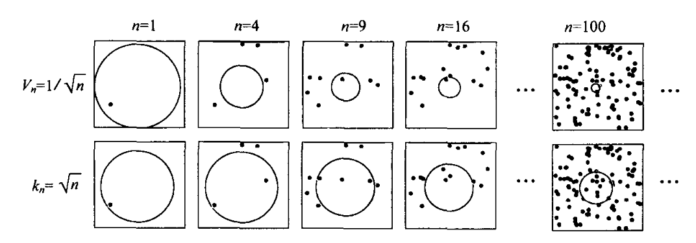
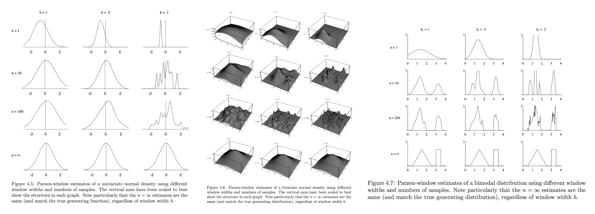
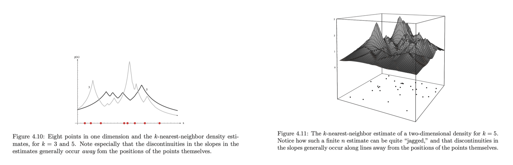
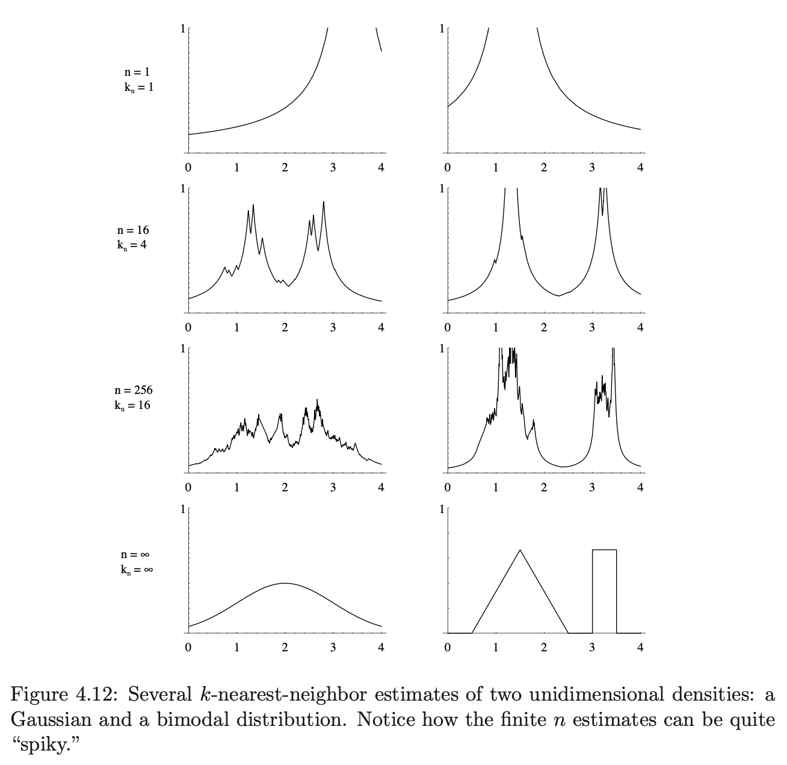
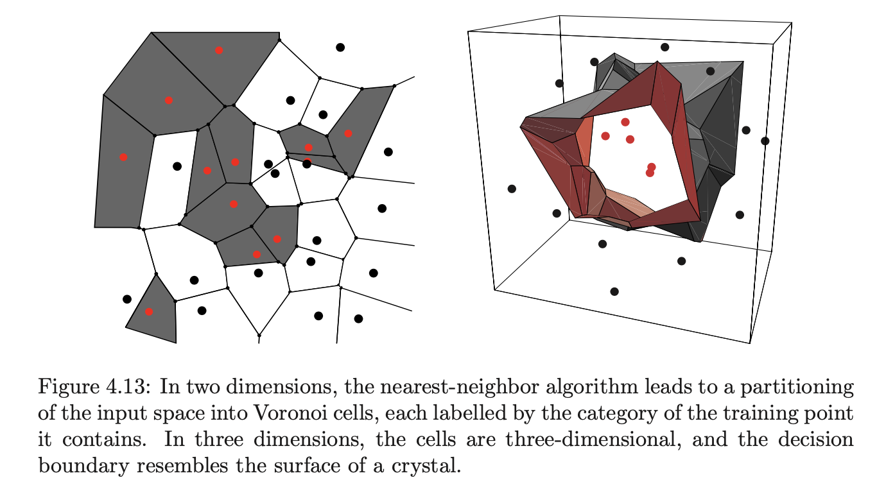
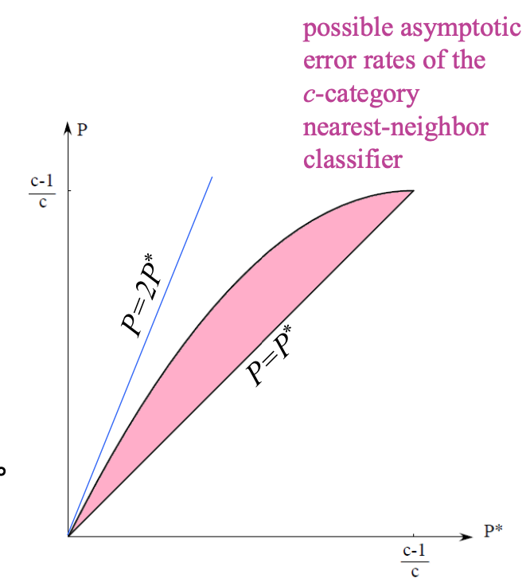
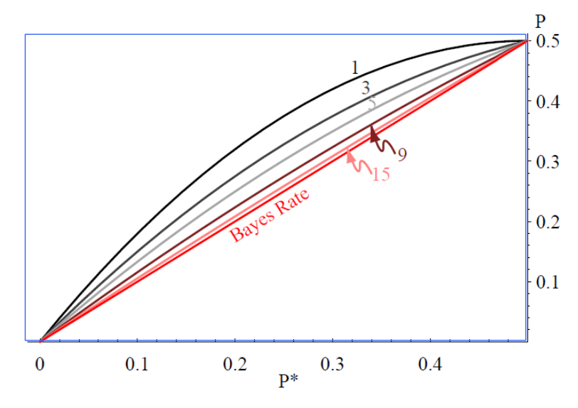

[模式分类]非参数方法
本文对应《模式分类》的第 4 章。
核心思想
给定样本集 \(D=\{\mathbf x_1,\ldots,\mathbf x_n\}\)，假定这些样本独立采样自 \(p(\mathbf x)\)，我们希望得到 \(p(\mathbf x)\) 的一个估计。
考虑样本空间中的一个小区域 \(R\)。一方面，若 \(p(\mathbf x)\) 是连续的，且 \(R\) 足够小使得 \(p(\mathbf x)\) 在 \(R\) 中几乎不变，那么向量 \(\mathbf x\) 落入 \(R\) 的概率为： \[ P=\int_R p(\mathbf x')\mathrm d\mathbf x'\approx p(\mathbf x)V \] 其中 \(V\) 是区域 \(R\) 的体积。另一方面，当数据量足够大时，如果有 \(k\) 个样本落入 \(R\)，那么： \[ P\approx k/n \] 因此，联立上述两式，得： \[ p(\mathbf x)\approx\frac{k/n}{V} \] 然而，为了让这个“约等于”尽可能准确，\(V\) 需要趋近于零，\(n\) 需要趋近于无穷。但是在现实中我们能获得的样本量肯定是有限的。因此，如果 \(V\) 设置得太小，那么落入 \(R\) 的样本太少，甚至没有，导致对 \(p(\mathbf x)\) 的估计不连续；如果 \(V\) 设置得太大，那么对 \(p(\mathbf x)\) 的估计将太平滑。
为了解决这个问题，我们考虑如下过程：为了估计 \(\mathbf x\) 处的概率密度，构造一系列包含点 \(\mathbf x\) 的区域 \(R_1,R_2,\ldots\)，其中 \(R_n\) 将使用 \(n\) 个样本做密度估计。记 \(V_n\) 为 \(R_n\) 的体积，\(k_n\) 为落入 \(R_n\) 的样本数，那么可以得到序列： \[ p_n(\mathbf x)=\frac{k_n/n}{V_n},\quad n=1,2,\ldots\label{1}\tag{1} \] 当以下三个条件满足时，\(p_n(\mathbf x)\) 能收敛到 \(p(\mathbf x)\)：
- \(\lim_{n\to\infty}V_n=0\)
- \(\lim_{n\to\infty} k_n=\infty\)
- \(\lim_{n\to\infty} k_n/n=0\)
为了构造这样的序列，我们有两种方法——Parzen 窗和 k 近邻。前者取 \(V_n\) 为某个关于 \(n\) 的函数（例如 \(V_n=1/\sqrt{n}\)），而后者取 \(k_n\) 为某个关于 \(n\) 的函数（例如 \(k_n=\sqrt{n}\)）。在 \(n\to\infty\) 时二者都能够收敛，但在有限样本情况下很难预测它们的效果。

Parzen 窗
基本原理
为了方便，首先假设区域 \(R_n\) 是以 \(\mathbf x\)（待求密度处）为中心、边长为 \(h_n\) 的 \(d\) 维超立方体，则其体积为： \[ V_n=h_n^d \] 为了解析地表达 \(k_n\)，定义窗函数如下： \[ \varphi(\mathbf u)=\begin{cases}1,&|u_j|\leq 1/2,\,j=1,\ldots,d\\0,&\text{otherwise}\end{cases} \] 即一个以原点为中心、边长为 \(1\) 的超立方体。那么： \[ k_n=\sum_{i=1}^n\varphi\left(\frac{\mathbf x-\mathbf x_i}{h_n}\right) \] 代入 \(\eqref{1}\) 式得： \[ p_n(\mathbf x)=\frac{1}{n}\sum_{i=1}^n\frac{1}{V_n}\varphi\left(\frac{\mathbf x-\mathbf x_i}{h_n}\right)\label{parzen}\tag{2} \] 可以验证这的确是一个概率分布。
非负性显然，只需验证归一性： \[\begin{align}\int p_n(\mathbf x)\mathrm d\mathbf x&=\frac{1}{n}\sum_{i=1}^n\frac{1}{V_n}\int\varphi\left(\frac{\mathbf x-\mathbf x_i}{h_n}\right)\mathrm d\mathbf x\\&=\frac{1}{n}\sum_{i=1}^n\frac{1}{V_n}\int\varphi(\mathbf u_i)h_n^d\mathrm d\mathbf u_i&&\mathbf u_i=\frac{\mathbf x-\mathbf x_i}{h_n}\\&=\frac{1}{n}\sum_{i=1}^n\int\varphi(\mathbf u_i)\mathrm d\mathbf u_i\\&=\frac{1}{n}\sum_{i=1}^n1\\&=1\end{align}\] 因此 \(\eqref{parzen}\) 式的确是一个概率分布。
核函数角度
从核函数的角度理解，定义： \[ K(\mathbf x,\mathbf x_i)=\frac{1}{V_n}\varphi\left(\frac{\mathbf x-\mathbf x_i}{h_n}\right) \] 满足： \[ K(\mathbf x,\mathbf x_i)\geq 0,\quad\int K(\mathbf x,\mathbf x_i)=1 \] 那么 \(\eqref{parzen}\) 式可以写作： \[ p_n(\mathbf x)=\frac{1}{n}\sum_{i=1}^n K(\mathbf x,\mathbf x_i)\tag{3}\label{parzen-kernel} \] 因此 Parzen 窗方法也被称作核密度估计 (KDE)。\(\eqref{parzen-kernel}\) 式意味着 Parzen 窗估计也可以视作用核函数对样本在取值空间中进行插值。
窗函数/核函数的选择
上面为了推导方便，我们假定了窗函数是单位超立方体，但这只是一种选择而已，我们还可以使用其他形式：
正态窗： \[ K(\mathbf x,\mathbf x_i)=\frac{1}{(2\pi)^{d/2}|\Sigma|^{1/2}}\exp\left(-\frac{1}{2}(\mathbf x-\mathbf x_i)^T\Sigma^{-1}(\mathbf x-\mathbf x_i)\right) \]
球窗： \[ K(\mathbf x,\mathbf x_i)=\begin{cases}\frac{1}{V},&\Vert\mathbf x-\mathbf x_i\Vert\leq r\\0,&\text{otherwise}\end{cases} \] 其中 \(r\) 是超球体的半径，\(V\) 是超球体的体积。
窗宽的影响
显然，如果 \(h_n\)（或 \(V_n\)）选取太大，那么估计不够精确，可以理解为欠拟合；如果太小，那么不够稳定，可以理解为过拟合。下图展示了不同情况下用正态窗做估计的例子，窗宽设置为 \(h_n=h_1/\sqrt{n}\)，其中 \(h_1\) 是可以调整的参数。

k 近邻
基本原理
Parzen 窗方法是人为设置 \(V_n\)，再计算 \(k_n\)；k 近邻方法则相反——人为设置 \(k_n\)，再调整 \(V_n\) 使得区域内正好落入 \(k_n\) 个样本。这样窗宽将与训练样本有关，避免了如何选取合适窗宽的问题。
值得注意的是，尽管 k 近邻估计出的 \(p_n(\mathbf x)\) 是连续的，但其往往不可导，会有非常多的尖峰，且这些不可导点与原数据点几乎都是不同的，如下图所示：

另外，与 Parzen 窗不同的是，k 近邻得到的概率密度估计并不是一个合法的概率密度函数。例如，在一维情形下，记第 \(k_n\) 个正好落入区域内的样本为 \(\mathbf x_\text{kNN}\)，那么 \(V_n=2|\mathbf x-\mathbf x_\text{kNN}|\)，于是代入 \(\eqref{1}\) 式得： \[ p_n(\mathbf x)=\frac{k_n}{2n|\mathbf x-\mathbf x_\text{kNN}|} \] 由于 \(\frac{1}{x}\) 的积分是发散的，所以 \(p_n(\mathbf x)\) 的积分是无穷大，如下图所示：

虽然积分是发散的，但 k 近邻密度估计的一个优点是 \(p_n(\mathbf x)\) 永远不会为零，这在高维情况下非常有用。
用于估计后验概率
我们可以用 k 近邻方法估计每一个类别的概率分布，然后使用最大后验准则进行分类。具体而言，设 \(\mathbf x\) 周围包含 \(k\) 个样本的区域中，有 \(k_i\) 个样本属于 \(\omega_i\) 类，那么： \[ p_n(\mathbf x\vert\omega_i)=\frac{k_i/n_i}{V},\quad p_n(\mathbf x,\omega_i)=\frac{k_i/n}{V} \] 其中 \(n_i\) 表示属于 \(\omega_i\) 类的样本数量。于是对后验概率的估计为： \[ P_n(\omega_i\vert\mathbf x)=\frac{p_n(\mathbf x,\omega_i)}{p(\mathbf x)}=\frac{k_i/n}{V}\cdot\frac{V}{k/n}=\frac{k_i}{k} \] 即区域中属于 \(\omega_i\) 类的样本数量占区域中所有样本数量的比例。
根据最大后验准则，有了后验概率，就可以得到一个分类器： \[ \omega_m=\mathop{\text{argmax}}_i\{P_n(\omega_i\vert\mathbf x)\} \]
最近邻分类器
上面提到我们可以用 k 近邻方法估计后验概率，再根据最大后验准则就可以进行分类。但事实上，我们只依赖最近邻就能达到足够好的性能。
最近邻分类器的基本思想非常简单，即对于一个新样本，将其与已知样本逐一比较，找出距离最近的已知样本，以该样本的类别作为新样本的类别。如此，特征空间可以被分成一个个小单元（称作 Voronoi 网格），如图所示：

最近邻分类器有多好呢？可以证明，在无限训练样本的情形下，其误差率最多不会超过贝叶斯误差率的两倍。具体而言，设 \(P_n(e)\) 为 \(n\) 个样本下最近邻分类器的误差率，当 \(n\) 趋近无穷时该误差收敛到 \(P\)，记 \(P^\ast\) 为贝叶斯分类器的误差率，\(c\) 为类别数量，那么有： \[ P^\ast\leq P\leq P^\ast\left(2-\frac{c}{c-1}P^\ast\right) \] 
证明比较复杂，暂时略去，以后有时间再看。
k 近邻分类器及其改进
将最近邻分类器进行推广，选择前若干个离测试样本最近的样本，取其中出现最多的类别作为新样本的类别，这就是 k 近邻分类器。对 k 近邻分类器的分析比最近邻更加复杂，这里略去。结论是，当样本量无限时，随着 \(k\) 的增加，k 近邻分类器的误差率逐渐逼近下界贝叶斯误差率；当 \(k\) 趋近无穷大时二者相等。

一些改进方法：
剪辑近邻法。考虑到分类时最容易分类错误的地方就是交界区域处，因此可以设法将交界区域的样本去掉。因此我们需要识别出那些位于交界区域的样本。一种做法是：将已知样本集划分为训练集和测试集，采用近邻法利用训练集中的样本对测试样本进行分类，从中去掉被错分类的样本，剩余样本构成剪辑样本集，用于对新来的样本进行分类。
多重剪辑：
- 划分。将样本集随机划分为 \(s\) 个子集 \(X_1,X_2,\ldots, X_s\)；
- 分类。轮流地以其中一个作为训练样本集，对其邻近编号的样本进行测试；
- 剪辑。从各个子集中去掉在步骤 2 中被分错的样本；
- 混合。将剩下的样本合在一起，形成新的样本集；
- 迭代。转步骤 1，如果没有新的样本被剪辑掉，则停止迭代。
压缩近邻法。考虑近邻法的分类原理，那些远离分类边界的样本对于最后的分类决策没有贡献，因此可以去掉。
将样本集为两个活动的子集：储存集 \(X_S\) 和备选集 \(X_G\).
首先，在算法开始时，\(X_S\) 中只有一个样本，其余样本均在 \(X_G\) 中；
然后，考查 \(X_G\) 中的每一个样本，如果采用 \(X_S\) 中的样本能够对其正确分类，则该样本仍然保留在 \(X_G\) 中， 否则移动到 \(X_S\) 中，从而扩大代表集合。依次重复进行上述操作，直到没有样本需要搬移为止。
最后，用 \(X_S\) 中的样本作为代表样本，对新来的样本进行分类。
距离度量
合法的距离度量应满足：
- 非负性：\(D(\mathbf x,\mathbf y)\geq 0\)
- 自反性：\(D(\mathbf x,\mathbf y)=0\iff\mathbf x=\mathbf y\)
- 对称性：\(D(\mathbf x,\mathbf y)=D(\mathbf y,\mathbf x)\)
- 三角不等式：\(D(\mathbf x,\mathbf y)+D(\mathbf y,\mathbf z)\geq D(\mathbf x,\mathbf z)\)
常见距离度量：
Minkowski 距离： \[ D(\mathbf x,\mathbf y)=\left(\sum_{i=1}^d|x_i-y_i|^q\right)^{1/q} \]
Manhattan 距离： \[ D(\mathbf x,\mathbf y)=\sum_{i=1}^d|x_i-y_i| \]
Euclidean 距离： \[ D(\mathbf x,\mathbf y)=\sqrt{\sum_{i=1}^d(x_i-y_i)^2} \]
Chebyshev 距离： \[ D(\mathbf x,\mathbf y)=\max_{i=1}^d|x_i-y_i| \]
Mahalanobis 距离： \[ D(\mathbf x,\mathbf y)=\sqrt{(\mathbf x-\mathbf y)^TM(\mathbf x-\mathbf y)} \] 其中 \(M\) 为半正定矩阵。